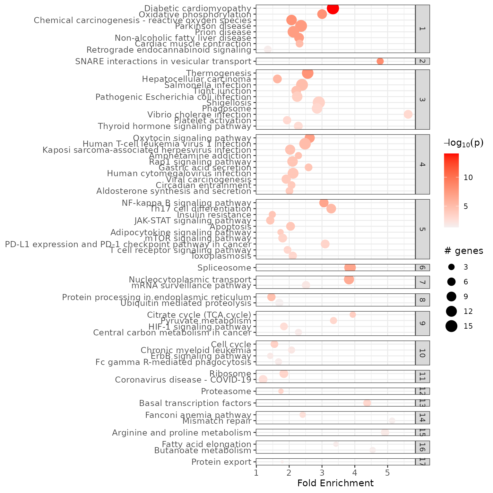
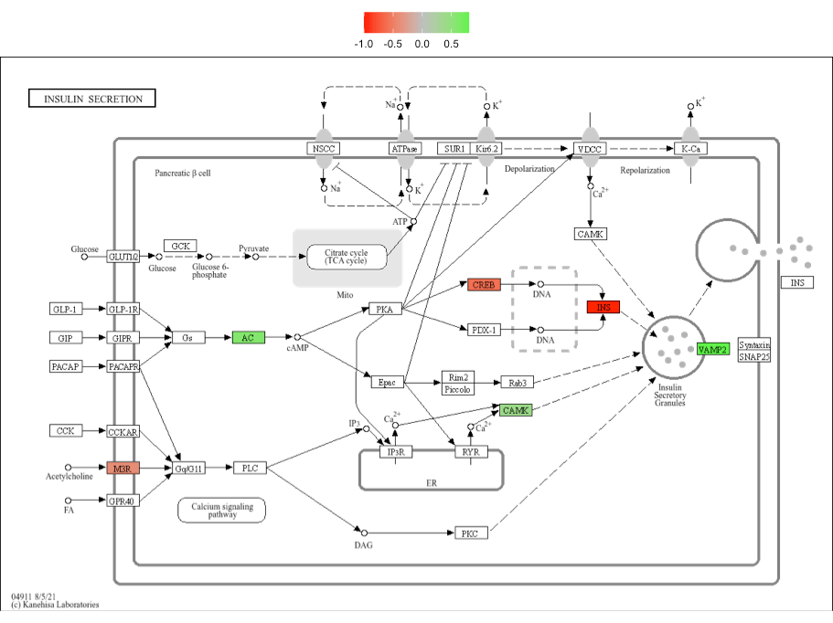
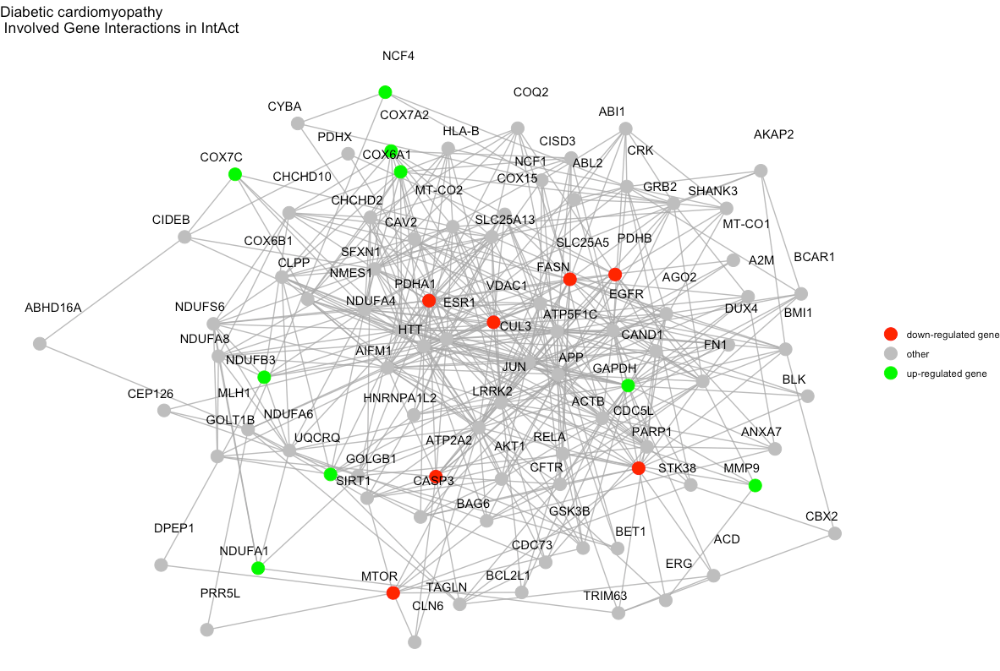
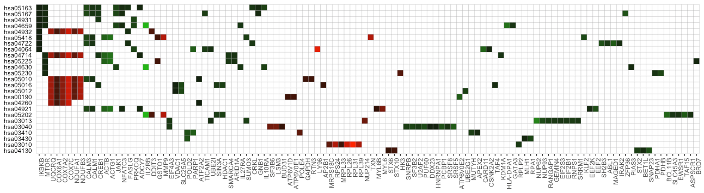
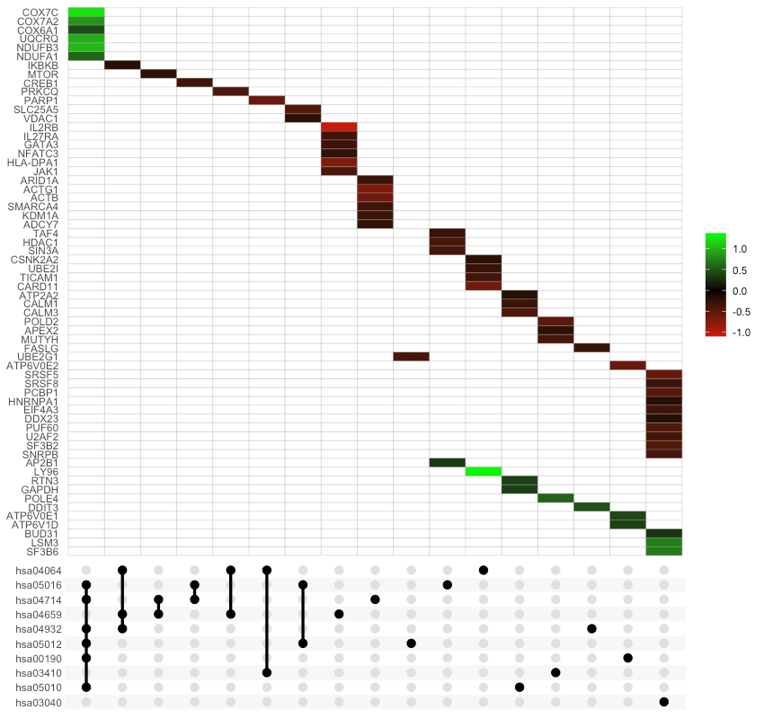

Visualization of pathfindR Enrichment Results
2025-02-17
Source:vignettes/visualization_vignette.Rmd
visualization_vignette.RmdpathfindR offers various functionality to visualize the
enrichment results. In this vignette, I try to demonstrate these
functionalities.
enrichment_chart(): Bubble Chart of Enrichment
Results
enrichment_chart generates a bubble chart. The x-axis
corresponds to fold enrichment values while the y-axis indicates the
enriched terms. Size of the bubble indicates the number of significant
genes in the given enriched term. Color indicates the -log10(lowest-p)
value. The closer the color is to red, the more significant the
enrichment is.
enrichment_chart(example_pathfindR_output)
By default, the bubble chart is generated for the top 10 terms. This
can be controlled by the top_terms argument:
## change top_terms
enrichment_chart(example_pathfindR_output, top_terms = 3)
## set null for displaying all terms
enrichment_chart(example_pathfindR_output, top_terms = NULL)If the enrichment results were clustered, setting
plot_by_cluster == TRUE will result in the enriched terms
to be grouped by clusters:
enrichment_chart(example_pathfindR_output_clustered, plot_by_cluster = TRUE)
#> Plotting the enrichment bubble chart
See ?enrichment_chart for more details.
visualize_terms(): Enriched Term Diagrams
For KEGG enrichment analyses, visualize_terms() can be
used to generate KEGG pathway diagrams that are returned as a list of
ggraph objects (using ggkegg)::
input_processed <- input_processing(example_pathfindR_input)
gg_list <- visualize_terms(
result_df = example_pathfindR_output,
input_processed = input_processed,
is_KEGG_result = TRUE
) # this function returns a list of ggraph objects (named by Term ID)
# save one of the plots as PDF image
ggplot2::ggsave(
"hsa04911_diagram.pdf", # path to output, format is determined by extension
gg_list$hsa04911, # what to plot
width = 5 # adjust width
height = 5 # adjust height
) 
Alternatively (i.e., for other types of non-KEGG enrichment
analyses), an interaction diagram per enriched term can be generated
again via visualize_terms(). These diagrams are also
returned as a list of ggraph objects:
input_processed <- input_processing(example_pathfindR_input)
gg_list <- visualize_terms(
result_df = example_pathfindR_output,
input_processed = input_processed,
is_KEGG_result = FALSE,
pin_name_path = "Biogrid"
) # this function returns a list of ggraph objects (named by Term ID)
# save one of the plots as PDF image
ggplot2::ggsave(
"diabetic_cardiomyopathy_interactions.pdf", # path to output, format is determined by extension
gg_list$hsa04911, # what to plot
width = 10 # adjust width
height = 6 # adjust height
) 
See ?visualize_terms for more details.
term_gene_heatmap(): Terms by Genes Heatmap
term_gene_heatmap() is used to create a heatmap where
rows are enriched terms and columns are involved input genes. This
heatmap allows visual identification of the input genes involved in the
enriched terms, as well as the common or distinct genes between
different terms.
term_gene_heatmap(example_pathfindR_output)
By default, the heatmap is generated for the top 10 terms. This can
be controlled by the num_terms argument:
term_gene_heatmap(example_pathfindR_output, num_terms = 3)
## set null for displaying all terms
term_gene_heatmap(example_pathfindR_output, num_terms = NULL)By default, the term ids are used. For using full descriptions, set
use_description = TRUE
term_gene_heatmap(example_pathfindR_output, use_description = TRUE)If the input data frame (same as in run_pathfindR()) is
supplied, the tile colors indicate the change values:
term_gene_heatmap(result_df = example_pathfindR_output, genes_df = example_pathfindR_input)
See ?term_gene_heatmap for more details.
term_gene_graph(): Term-Gene Graph
The function term_gene_graph() (adapted from the
Gene-Concept network visualization by the R package
enrichplot) can be utilized to visualize which significant
genes are involved in the enriched terms. The function creates the
term-gene graph, displaying the connections between genes and biological
terms (enriched pathways or gene sets). This allows for the
investigation of multiple terms to which significant genes are related.
The graph also enables determination of the degree of overlap between
the enriched terms by identifying shared and/or distinct significant
genes. By default, the function visualizes the term-gene graph for the
top 10 enriched terms:
term_gene_graph(example_pathfindR_output)
To plot all of the enriched terms in the enrichment results, set
num_terms = NULL (not advised due to cluttered
visualization):
term_gene_graph(example_pathfindR_output, num_terms = NULL)To plot using full term names (instead of IDs which is the default),
set use_description = TRUE:
term_gene_graph(example_pathfindR_output, num_terms = 3, use_description = TRUE)
By default the node sizes are plotted proportional to the number of
genes a term contains (num_genes). To adjust node sizes
using the
(lowest
p values), set node_size = "p_val":
term_gene_graph(example_pathfindR_output, num_terms = 3, node_size = "p_val")See ?term_gene_graph for more details.
UpSet_plot(): UpSet Plots of Enriched Terms
UpSet plots are plots of the intersections of sets as a matrix.
UpSet_plot() creates a ggplot object of an UpSet plot where
the x-axis is the UpSet plot of intersections of enriched terms. By
default (method = "heatmap"), the main plot is a heatmap of
genes at the corresponding intersections, colored by up/down
regulation:
UpSet_plot(example_pathfindR_output)
If genes_df is provided, the heatmap tiles are colored by change values:
UpSet_plot(example_pathfindR_output, genes_df = example_pathfindR_input)
Again, you may change the number of top terms plotted via
num_terms (default = 10):
UpSet_plot(example_pathfindR_output, num_terms = 5)Again, to plot using full term names (instead of IDs which is the
default), set use_description = TRUE:
UpSet_plot(example_pathfindR_output, use_description = TRUE)If method = "barplot", the main plot is a bar plots of
the number of genes in the corresponding intersections:
UpSet_plot(example_pathfindR_output, method = "barplot")If method = "boxplot" and if genes_df is
provided, then the main plot displays the boxplots of change values of
the genes within the corresponding intersections:
UpSet_plot(example_pathfindR_output, example_pathfindR_input, method = "boxplot")See ?UpSet_plot for more details.